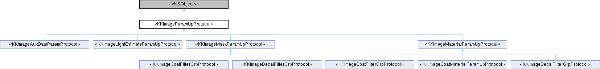

Shine
Loading...
Searching...
No Matches
<KKImageParamUpProtocol> Protocol Reference
Inheritance diagram for <KKImageParamUpProtocol>:

The documentation for this protocol was generated from the following file:
Shine/Shine/Sections/EffectSection/Model/
KKImageParamObject.h
Generated by
1.9.8